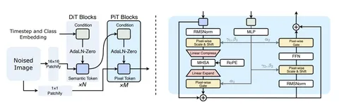

Сегодня разбираем статью, в которой предложили ещё один способ заставить диффузионный трансформер работать напрямую с пикселями. Самое интересное в работе — описанная авторами архитектура.
Главное нововведение подхода в том, что модель обрабатывает изображение на двух уровнях: отдельно семантику, отдельно пиксельные детали.
Сначала картинку бьют на крупные патчи 16х16 и прогоняют через обычные DiT-блоки. На выходе получаются семантические токены, которые компактно передают глобальное содержание картинки.
После этого модель снова берёт исходное изображение, но уже с размером патча 1х1. Каждый пиксель становится отдельным токеном с эмбеддингом маленькой размерности. Семантические токены из первой части используют для обусловливания pixel-блоков через pixel-wise AdaLN. То есть первая часть модели отвечает за семантику изображения, а вторая восстанавливает его буквально по отдельным пикселям.
Но селф-аттеншн по всем пикселям стоил бы безумно дорого. Поэтому перед аттеншном PixelDiT временно группирует соседние пиксельные токены: длина последовательности уменьшается, размерность представления растет, аттеншн считается уже в сжатом пространстве, а затем токены разворачиваются обратно. Авторы делают акцент на том, что это именно оптимизация вычислений, при этом fine-grained-информация продолжает идти через pixel-level-представление. Без такого сжатия модель просто упирается в OOM.
В методе JiT для перевода эмбеддингов обратно в изображение используется один линейный слой. Если выход высокоразмерный (пересказываем шум или velocity), то такое работать не будет. Именно поэтому в JiT модель предсказывает чистое изображение (чистый патч) — чистое изображение лежит в низкоразмерном пространстве. В это же время PixelDiT каждый пиксель обрабатывает отдельно, поэтому модель предсказывает высокоразмерную velocity.
И ещё прикольно выглядит использование AdaLN. Здесь conditioning — не один глобально спуленный вектор. Семантические представления используют, чтобы отдельно обогащать информацией pixel-level-представления. По аблейшену, pixel-wise AdaLN делает хороший вклад в результат.
Разбор подготовил
CV Time
